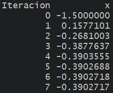

2 Solución Numérica de Ecuaciones No Lineales
2.1 Generalidades
- En esta unidad estudiaremos uno de los problemas más básicos y antiguos de la aproximación numérica: la solución de ecuaciones.
- Consiste en obtener una solución de una ecuación \(F(x) = O\).
- Se presenta en una gran variedad de problemas.
- Las soluciones de una ecuación se llaman raíces o ceros.
- Una ecuación lineal es una igualdad que involucra una o más variables elevadas a la primera potencia y no contiene productos entre las variables (involucra solamente sumas y restas de las variables). Por ejemplo: \(3x+2 = 8\).
- Para este tipo de ecuaciones es posible hallar analíticamente una expresión para su solución.
- En una ecuación no lineal las incógnitas están elevadas a potencias distintas de \(1\), aparecen en denominadores o exponentes o están afectadas por funciones no lineales (como el logaritmo o las trigonométricas).
Un tipo de ecuación no lineal es la ecuación algebraica, que se trata de un polinomio igualado a cero:
\[ P_n(x) = a_0 x^n + a_1 x^{n-1} + ... + a_{n-1} x + a_n = 0 \] donde \(a_0 \ne 0, n \in \mathbb{N}\) y \(a_0, \dots, a_n\) son constantes.
Ejemplo: \(x^3 - x^2 + 5x - 8 = 2x^5\).
Sabemos que si, por ejemplo, \(n = 2\), la solución de \(ax^2 + b x + c = 0\) está dada por la resolvente:
\[ x_{1,2} = \frac{b \pm \sqrt{b^2 - 4ac}}{2a} \]
Sin embargo, la solución análitica para este tipo de ecuaciones existe sólo para \(n \le 4\).
Las restantes ecuaciones no lineales se dice que son trascendentes, por ejemplo:
\[\begin{gather*} x^3 - ln x + \frac{3}{x} = 2 \\ tg(x + 45) = 1 + sen(2x) \\ xe^{x}=1 \\ {\displaystyle 5^{x}=9^{x+1} 3^{x}} \end{gather*}\]
- En general, tampoco es posible hallar de manera análitica una solución exacta para estas ecuaciones.
- Excepto para algunos problemas, las ecuaciones no lineales carecen de solución exacta, por lo que requieren ser resueltas con métodos numéricos.
- Una técnica fundamental de los métodos numéricos es la ITERACIÓN (métodos iterativos).
- Se trata de repetir un proceso hasta que se obtiene un resultado para el problema.
- En la unidad se verán distintos métodos iterativos para encontrar las raíces, cada con sus propias ventajas y limitaciones.
Requieren dos pasos generales:
- Determinación de un valor aproximado de la raiz que se busca.
- Mejoramiento de la solución hasta lograr un grado de precisión preestablecido.
2.2 Método de las Aproximaciones Sucesivas o del Punto Fijo
2.2.1 Punto fijo
Definición de Punto Fijo
- Un punto fijo de una función \(f(x)\) es un número real \(P\) tal que \(f(P)=P\).
Ejemplos:
- \(f(x)=x^{2}-3x+4\), \(2\) es un punto fijo de \(f\) porque \(f(2) = 2\).
- \(f(x)=x^{2}\), \(0\) y \(1\) son puntos fijos de \(f\) porque \(f(0) = 0\) y \(f(1) = 1\).
¿Cómo encontrar un punto fijo de \(f(x)\)?
Sea \(f\) una función continua y \(p_0, p_1, \dots, p_n, \dots\) una sucesión generada a partir de \(p_{n} = f(p_{n-1})\) con un valor inicial \(p_0\), es decir:
\[\begin{gather*} p_0 \\ p_1 = f(p_0) \\ p_2 = f(p_1) \\ \vdots \\ p_n = f(p_{n-1}) \\ \vdots \\ \end{gather*}\]
Si \(lim_{n\to\infty} p_n = P\), entonces \(P\) es un punto fijo de \(f(x)\).
2.2.2 Empleo del punto fijo para la resolución de ecuaciones
Siendo:
\[\begin{equation} F(x) = 0 \tag{2.1} \end{equation}\]
la ecuación a resolver, el Método de las Aproximaciones Sucesivas propone reescribirla a través de la ecuación equivalente:
\[ f(x) = x \]
de manera que la tarea de hallar un valor de \(x\) que satisface (2.1) es lo mismo que hallar un punto fijo de la función \(f(x)\).
Entonces, el método para resolver \(F(x) = 0\) consiste en:
- Expresar la ecuación en la forma \(x = f(x)\).
- Elegir un valor inicial adecuado \(x_0\).
- Realizar el siguiente cálculo iterativo:
\[\begin{gather*} x_1 = f(x_0) \\ x_2 = f(x_1) \\ \vdots \\ x_n = f(x_{n-1}) \\ \vdots \\ \end{gather*}\]
- Si a medida que \(n\) crece los \(x_n\) se aproximan a un valor fijo, se dice que el método converge y la iteración se detiene cuando la diferencia entre dos valores consecutivos \(x_{n-1}\) y \(x_n\) sea tan pequeña como se desee.
- El valor \(x_n\) será una raíz aproximada de \(F(x)\).
Ejemplo
- Hallar las raíces de la ecuación no lineal: \(F(x) = x^2-3x+e^x-2=0\)
- Graficamos y vemos que las raíces están cercanas a -0.4 y 1.4.
Nota: para hacer representaciones gráficas de funciones con rapidez y sencillez pueden utilizar herramientas disponibles online. Por ejemplo, nos gusta mucho usar Geogebra.
- Reescribimos \(F(x) = 0\) como \(f(x) = x\)
Por ejemplo:
\[F(x) = x^2-3x+e^x-2 = 0\] \[\implies \underbrace{\frac{x^2+e^x-2}{3}}_{f(x)} = x \] \[\implies f(x)= \frac{x^2+e^x-2}{3}\]
- Para \(x_0 = -1.5\), el proceso converge al valor -0.390271 que consideraremos como la aproximación para la raíz buscada.

- Verificar estos resultados, pueden hacerlo rápidamente en una planilla de Excel.
2.2.3 Criterios para detener el proceso iterativo
- Criterios para convergencia:
Error absoluto: \(|x_{j+1}-x_j| < \epsilon\)
Error relativo: \(\left|\frac{x_{j+1}-x_j}{x_j}\right| < \epsilon\)
Error relativo respecto al valor inicial: \(\left|\frac{x_{j+1}-x_j}{x_0}\right| < \epsilon\)
\(|F(x_j)| < \epsilon\)
- Criterios para divergencia:
\(j > r\), \(r\) número máximo de iteraciones
\(|x_j - x_1| > k\)
\(|F(x_j)| > k\)
\(|x_{j+1}-x_j| > k\)
\(\left|\frac{x_{j}}{x_1}\right| > k\)
Ejemplo
- En cada paso calculamos el error relativo y nos detuvimos cuando el mismo fue menor a 1E-6.
2.2.4 Teorema del Punto Fijo
- Pero esto no funciona siempre, para cualquier \(f\) o cualquier \(x_0\)…
- ¿Cuándo funciona? Cuando se cumplen las condiciones del Teorema del Punto Fijo.
- A saber:
Dadas las siguientes condiciones:
- \(f\) es una función continua en el intervalo \([a, b]\)
- \(f(x) \in [a, b] \quad \forall x \in [a, b]\)
- \(f'\) existe en \((a, b)\) con \(|f'(x)| \le m < 1 \quad \forall x \in (a, b)\)
Si \(x_0\) es cualquier número en \([a, b]\), entonces la sucesión definida por \[ x_n = f(x_{n-1}), \quad n \ge 1,\]
converge al único punto fijo que \(f\) posee en \([a, b]\).
Ver demostración en el anexo.
Ejemplo
- En el ejemplo anterior, dada la ecuación \(F(x) = x^2-3x+e^x-2=0\), la reexpresamos como:
\[x = \frac{x^2+e^x-2}{3} \implies f(x)= \frac{x^2+e^x-2}{3}\]
\[\implies f'(x) = \frac{1}{3}(2x+e^x)\]
- Verificar condiciones del Teorema: para cada región donde se encuentra la raíz, tomar un intervalo \([a, b]\) que la cubra y graficar \(f\) y su derivada para poder observar el cumplimiento o no de las condiciones).
- Si no se cumplen las condiciones, podemos probar con otra expresión para \(f(x)\).
2.2.5 Interpretación gráfica
- Dado que el método plantea encontrar el valor de \(x\) que satisface \(x = f(x)\), resolver la ecuación original es equivalente a resolver el sistema:
\[\begin{equation} \begin{cases} y = f(x) \\ y = x \end{cases} \end{equation}\]
- Es decir, que geométricamente el valor buscado es el punto de intersección de la curva \(y=f(x)\) con la recta \(y=x\).
Ejemplo
- Para \(x_0 = -1.5\), el proceso converge en 7 iteraciones a la raíz -0.390271 con un error relativo menor a -1E+6.

2.2.6 Algunos diagramas
Ejemplos de convergencia:

Ejemplos de divergencia:
2.3 Método de Newton-Raphson
- Si la función \(F\) y sus derivadas \(F'\) y \(F''\) son continuas cerca de una raíz \(p\), se pueden usar estas características de \(F\) para desarrollar algoritmos que produzcan sucesiones \(\{x_k\}\) que converjan a \(p\) más rápidamente.
- El método de Newton-Raphson es uno de los más útiles y conocidos.
- Vamos a introducir este método a partir de su interpretación geométrica y su representación gráfica.
- Recordar: La tangente a una curva en un punto es una recta que toca a la curva sólo en dicho punto.
- Veamos el siguiente ejemplo donde el objetivo es hallar la raiz de la función \(F\), es decir, el valor \(p\) tal que \(F(p) = 0\).
(Sí, tenemos que hacer más lindos estos esquemas, ya los vamos a reemplazar por alguna animación…)
Supongamos que contamos con una aproximación inicial \(x_0\) cercana a la raiz \(p\).

- Definimos a \(x_1\) como el punto de intersección del eje de las abscisas con la recta tangente a la curva \(F\) en \(x_0\).
- En el caso que muestra la figura, se puede observar que \(x_1\) está más cerca de \(p\) que \(x_0\).

- Ahora definimos a \(x_2\) como el punto de intersección del eje de las abscisas con la recta tangente a la curva \(F\) en \(x_1\).
- Nuevamente, para el caso del ejemplo, podemos ver cómo \(x_2\) está aún más cerca de \(p\).
- Si continuamos repitiendo este proceso, esperamos encontrar un \(x_n\) que sea una buena aproximación para \(p\).


- ¿Podemos expresar esto que observamos gráficamente a través de una fórmula?
- Es decir, a partir de \(x_0\), ¿podemos encontrar una fórmula para \(x_1\)?
- Sí, para eso hay prestarle atención a la pendiente \(m\) de la recta tangente en \(x_0\).
Por un lado, sabemos que la pendiente de la recta tangente a la curva en un punto es igual a la derivada de la función en dicho punto:
\[\begin{equation} m = F'(x_0) \tag{2.2} \end{equation}\]
Pero además sabemos que para cualquier recta, la pendiente es igual a:
\[\begin{equation} m = \frac{y_1 - y_0}{x_1 - x_0} \tag{2.3} \end{equation}\]
siendo \((x_0, y_0)\) y \((x_1, y_1)\) dos puntos distintos que pertenecen a la misma.
Para expresar la pendiente de la recta tangente en \(x_0\), podemos tomar los puntos \((x_0, F(x_0))\) y \((x_1, 0)\) (el punto donde la tangente intersecta al eje x), de manera que a partir de la fórmula anterior:
\[\begin{equation} m = \frac{0 - F(x_0)}{x_1 - x_0} = - \frac{F(x_0)}{x_1 - x_0} \tag{2.4} \end{equation}\]
Igualando (2.2) y (2.4) y despejando \(x_1\) nos queda:
\[\begin{equation} x_1 = x_0 - \frac{F(x_0)}{F'(x_0)} \tag{2.5} \end{equation}\]
Si repetimos este pensamiento empezando desde \(x_1\) con la recta tangente a \(F\) en el punto \(x_1\), vamos a encontrar que:
\[\begin{equation} x_2 = x_1 - \frac{F(x_1)}{F'(x_1)} \tag{2.6} \end{equation}\]
- De esta manera hemos deducido una fórmula recursiva que nos permitirá hallar una aproximación para el verdadero valor de la raiz de \(F\).
- Las ideas anteriores se formalizan analíticamente a través del siguiente teorema.
En el mismo se deduce la fórmula recursiva a partir del desarrollo en serie de Taylor de la función \(F\).
2.3.1 Teorema de Newton-Raphson
Supongamos que la función \(F\) es continua, con derivada segunda continua en el intervalo \([a; b]\), y que existe un número \(p \in [a; b]\) tal que \(F(p) = 0\). Si \(F'(p) \neq 0\), entonces existe \(\delta > 0\) tal que la sucesión \(\{x_k\}_{k=0}^{\infty}\) definida por el proceso iterativo
\[ x_k = x_{k-1} - \frac{F(x_{k-1})}{F'(x_{k-1})} \quad k = 1, 2, \dots \]
converge a \(p\) cualquiera sea la aproximación inicial \(x_0 \in [p - \delta; p + \delta]\)
Convergencia
Observación: para garantizar la convergencia, \(\delta\) debe ser elegido tal que: \[\frac{|F(x)F''(x)|}{[F'(x)]^2} < 1 \quad \forall x \in [p - \delta, p + \delta]\]
Esto significa que:
- \(x_0\) debe estar suficientemente cerca a la raíz de \(F(x) = 0\).
- \(F''(x)\) no debe ser excesivamente grande.
- \(F'(x)\) no debe estar muy próxima a cero.
Ejemplo
- Evaluar si Newton-Raphson permite hallar la raíz positiva de \(F(x) = x^2-3x+e^x-2\), que no pudo ser hallada con Aproximaciones Sucesivas.
2.3.2 Ventajas y desventajas
Ventajas
- Aparece la expresión original \(F\) en lugar de tener que buscar una \(f\).
- Converge más rápido que el método de las aproximaciones sucesivas.
- En algunos casos en que aproximaciones sucesivas diverge, N-R converge.
- Se puede adaptar para hallar raíces complejas.
Limitaciones
- Si \(x_0\) está demasiado lejos de la raíz deseada, la sucesión \(\{x_k\}\) puede converger a otra raíz (la pendiente \(F'(x_0)\) es muy pequeña).
- Obtener la derivada primera de la función \(F\) puede ser difícil o imposible. En ese caso se podría aproximar \(F'(x_{k-1})\) con: \[F'(x_{k-1}) \approx \frac{F(x_{k-1} + h) - F(x_{k-1})}{h}\] donde \(h\) es un valor pequeño, por ejemplo, \(h = 0,001\).
2.4 Método de von Mises
- En el método de N-R, el denominador \(F'(x_k)\) hace que geométricamente se pase de una aproximación a la siguiente por la tangente de la curva \(y = F(x)\) en el punto correspondiente a la aproximación presente \(x_k\).
- Esto puede producir problemas cuando se esté en puntos alejados de raíces y cerca de puntos donde el valor de \(F'(x)\) sea cercano a 0 (tangentes cercanas a la horizontal).
- Para resolver este problema, von Mises sugirió sustituir \(F'(x_k)\) en el denominador por \(F'(x_0)\).
- Es decir, obtener geométricamente las siguientes aproximaciones por medio de rectas paralelas siempre a la primera tangente.
- La fórmula de recurrencia resultante es:
\[ x_k = x_{k-1} - \frac{F(x_{k-1})}{F'(x_{0})} \quad k = 1, 2, \dots \]
2.5 Método de Newton-Raphson de 2º Orden
- Otra modificación al método de N-R se deriva a partir de la utilización de un término más en el desarrollo por serie de Taylor de la función \(F(x)\).
- Dada la existencia de las correspondientes derivadas, la fórmula de recurrencia resultante es:
\[ x_k = x_{k-1} + \frac{F(x_{k-1})F'(x_{k-1})}{0.5 F(x_{k-1}) F''(x_{k-1}) - [F'(x_{k-1})]^2} \quad k = 1, 2, \dots \]
- El método de N-R de 2º orden llega más rápidamente a la raíz, aunque la fórmula es más difícil de obtener.